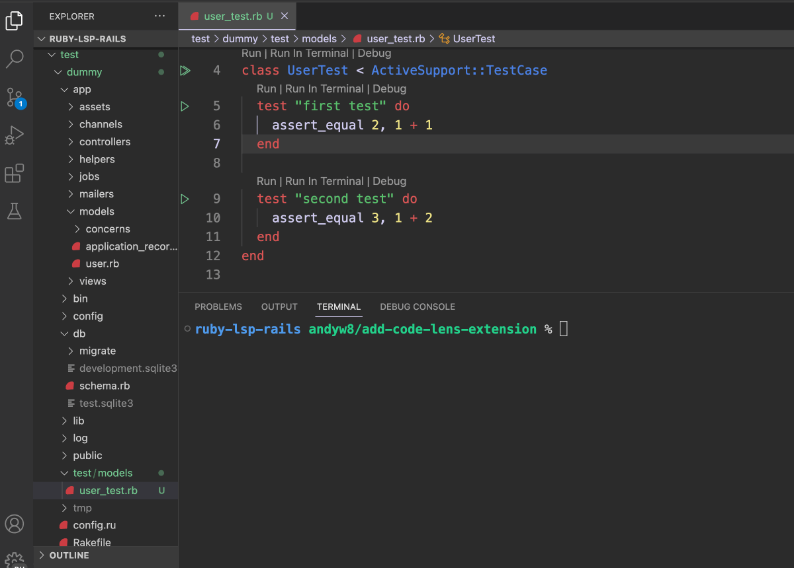

class RubyLsp::Rails::CodeLens

This feature adds Code Lens features for Rails applications.
For Active Support test cases:
-
Run tests in the VS Terminal
-
Run tests in the VS Code Test Explorer
-
Debug tests
-
Run migrations in the VS Terminal
For Rails controllers:
-
See the path corresponding to an action
-
Click on the action’s Code Lens to jump to its declaration in the routes.
Note: This depends on a support for the rubyLsp.openFile command. For the VS Code extension this is built-in, but for other editors this may require some custom configuration.
The code lens request informs the editor of runnable commands such as tests. It’s available for tests which inherit from ActiveSupport::TestCase or one of its descendants, such as ActionDispatch::IntegrationTest.
Example:¶ ↑
For the following code, Code Lenses will be added above the class definition above each test method.
Run class HelloTest < ActiveSupport::TestCase # <- Will show code lenses above for running or debugging the whole test test "outputs hello" do # <- Will show code lenses above for running or debugging this test # ... end test "outputs goodbye" do # <- Will show code lenses above for running or debugging this test # ... end end
Example:¶ ↑
Run class AddFirstNameToUsers < ActiveRecord::Migration[7.1] # ... end ```` The code lenses will be displayed above the class and above each test method. Note: When using the Test Explorer view, if your code contains a statement to pause execution (e.g. `debugger`) it will cause the test runner to hang. For the following code, assuming the routing contains `resources :users`, a Code Lens will be seen above each action.
ruby class UsersController < ApplicationController GET /users(.:format) def index # <- Will show code lens above for the path end end
“‘
Note: Complex routing configurations may not be supported.